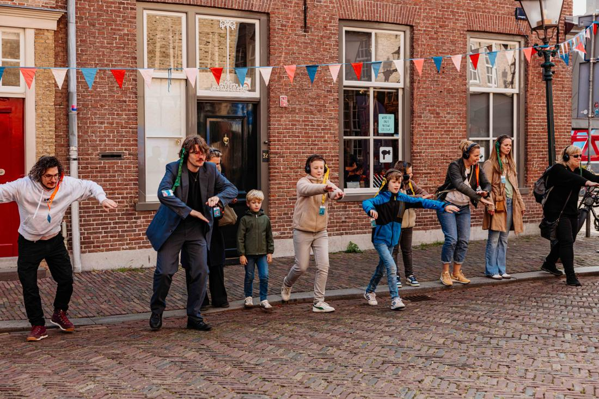

de folder zegt het. wij maken het echt.
de folder: het boekje ‘Bereid je voor op een noodsituatie’ van de Rijksoverheid
even eerlijk
voorbereid. maar heb je al geoefend?
Een noodpakket in de kast is één ding. Weten wat je moet doen als er echt iets gebeurt is iets anders. Drie vragen:
- Heb je weleens expres een avond zonder stroom doorgebracht?
- Vind je je zaklamp in het donker, zonder te zoeken?
- Heb je met je buren afgesproken wie bij wie aanklopt?
– van 3 geoefend
Denk vooruit vraagt om een noodpakket, een noodplan en elkaar helpen. Wij vragen of je het ook weleens hebt gedaan.

silent noodshow · festival voor de vloed, dordrecht